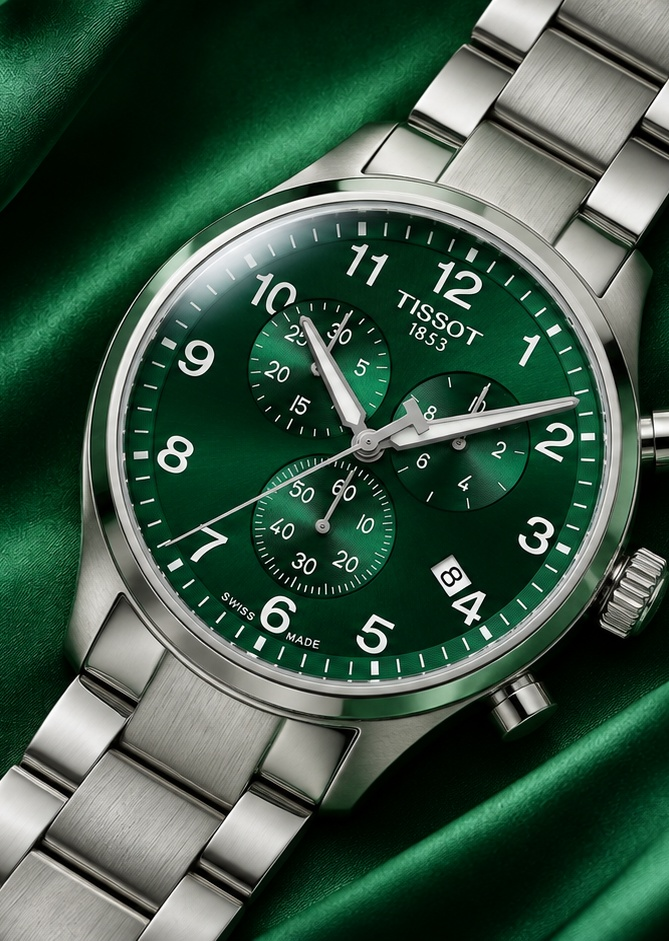
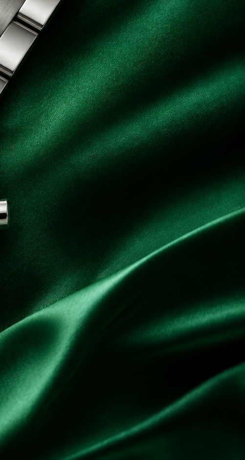

THE VESPER PHILOSOPHY
PERSONAL BY DESIGN
Less noise.
More meaning.
A great watch doesn't demand attention. It earns it, through proportions, materials and the details you notice over time.
Discover the edit ↗VESPER — TIME, CONSIDERED.
A considered collection of timepieces for the moments that stay with you.
VESPER JOURNAL — ISSUE 001 / 2026
A curated study in colour, craftsmanship and character.


PERSONAL BY DESIGN
A great watch doesn't demand attention. It earns it, through proportions, materials and the details you notice over time.
Discover the edit ↗THE DETAILS / UP CLOSE
Every detail has its place. Explore the architecture of a timepiece.
THE EVERYDAY EDIT
Considered design for unplanned afternoons, long journeys and everything in between.
Find your watch ↗04 / THE COLLECTION · 0 PIECES
An intimate selection, not an endless catalogue. Explore every watch, examine the dial, and see true proportions before arranging a viewing.
AN OBJECT. A STORY. A LIFETIME.
The details make
the difference.
05 / OUR STANDARD
A selectively presented collection with model details and available provenance clearly described.
We present the condition and identifying details available for each watch; request verification documents before purchasing.
We share condition information and photographs so you can ask informed questions before committing.
Archive
06 / PERSONAL SERVICE
Viewings are private and unhurried. Message us with the lot number and we'll set a time.